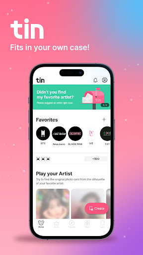
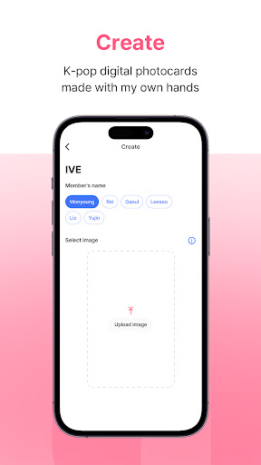

深度盘点 Tin：把追星照片变成数字收藏册的全部玩法
从剪影猜图的核心机制到亲手做卡的原创体系，再到社区交换与社交——Tin 这款追星收藏应用的能力面完整铺开，哪些场景适配、哪些人群值得入坑，一次性说透。
追星这件事，从来不只是看看演唱会、存存照片那么简单。当一个粉丝的本命相册从几十张攒到几百上千张，很多人会发现自己需要的不是另一个图床，而是一套能把这些照片变成「有仪式感的收藏」的东西。Tin 就是冲着这个缺口来的——它不是又一个追星社区，官网上的定位写得很清楚，就是把卡圈文化完整搬到了手机上：剪影猜图收卡、亲手制卡署名、限量顺位编号、铁盒收藏、送卡社交……这套体系环环相扣，每一环都在为「收藏」这个动作服务。
核心玩法：剪影猜图如何驱动整个社区
Tin 的入口不是注册账号，而是剪影猜图。每日官方会发布一批艺人的剪影卡，用户需要从自己的相册或网上找到那张原图，上传进行比对。比对成功就能收走这张数字小卡，同时获得一个 P# 顺位编号——每一张卡限量 100 张，P# 001 是第一个收走它的人，P# 100 是最后一个。

这个机制的设计非常聪明：它不是简单的抽奖或签到，而是把「找图」这个动作本身变成了玩法。同一张卡，不同的人找到的图源质量、清晰度、裁切角度都不一样，比对结果也随之不同。官方帮助中心专门总结了高频失败原因——倾斜角度、尺寸缩放、二次传播压缩图、人物偏移，每一条都戳中实际使用中的痛点。连败两三次就该换个目标或换个图源，别头铁消耗 Scanner 道具，更多比对技巧可以去Tin文档翻一下。
P# 编号和限量 100 张的设定直接来自实体卡圈的传统逻辑。顺位靠前的卡更有价值，收卡之后它会永远待在你的铁盒里，变成你收藏册里的一张。这个设计让每一次猜图成功都有「我拿到了一张」的实感，而不是在服务器上多了一条数据。
用户原创：亲手做卡与 tinner 标识
剪影猜图是「收卡」，亲手做卡就是「发卡」——这是 Tin 最独特的能力域。任何用户都可以把自己拥有的高清照片做成一张新的数字小卡，上传后经过审核即可发布到社区，其他用户就能通过剪影猜图来收这张卡。
这里有一个社区内高频出现的词：tinner。3.14 版更新后官方明确定义了它——tinner 指的是最先制作出这张数字小卡的用户昵称。每张卡的 tinner 只有一个，P# 却有 100 个名额各归其主。这个设计的妙处在于：它把「原创署名」跟卡片本身绑定了，别人猜图收走你的卡、晒出去，左上角都挂着你的昵称。帖子上点击 tinner 的名字还能跳转到对应艺人页，顺藤摸瓜看到更多同好数据。
成为 tinner 的实际意义远不止一个标识。它驱动了社区的原创积极性——制卡要过审，清晰、合规、有辨识度的卡才能立住，搬运糊图的空间被天然压缩。看到自己的卡被别人收走、在社区里流转，那种感觉完全不同于上传一张社交帖子。

收藏管理：Tin 盒与装饰系统
收卡和发卡之后，这些数字藏品归谁管？Tin 给了一个很形象的答案——Tin 盒。它不是普通的文件夹，而是一个视觉化的铁盒界面，每张卡都以实物小卡的形态陈列，支持查看编号、tinner、卡面细节，还能做装饰。
装饰系统看起来轻量但很有存在感：贴纸、边框、背景，用户可以给收藏的卡做个性化包装。社区里晒的应援照，很多就是把装饰好的 Tin 盒或单张卡带到演唱会现场、咖啡店、旅行地拍的。这个「从数字到现实」的仪式感，是 Tin 和纯相册类应用最大的分水岭。
社交体系：Gift 送卡与社区 Feed
收藏这件事如果只关在自己的 Tin 盒里，热度会很快消退。Tin 用一套Gift 送卡机制把收藏和社交打通了。在铁盒里选中一张卡，点 Gift 按钮直接送给好友，好友收下之后双方都能获得 Scanner 奖励——每天最多 5 次，以韩国时间 12:00 重置。送卡不是单向的付出，而是双方都得利的社交动作，收卡方晒出来，送卡方也有排面。
社区 Feed 则提供了一个公开展示的舞台。六语言翻译让跨语种评论畅通无阻，海外粉丝量很大，非韩语圈的同好反而多。Feed 里最常见的内容形态就是应援照——把卡带到现场打卡，配文晒出来，下面是同好们的互动和讨论。想体验这套从收藏到社交的完整闭环，可以先去下载装一下。
短板也要说：Tin 满足不了哪些需求
客观地看，Tin 不是万能的。如果你想要的是正版专辑小卡，那它帮不了——这里的卡全是粉丝自制的数字卡，和专辑里那张实体卡完全是两回事，也不存在「官方发行卡」这个概念。
如果你想在里面现金交易小卡，也走错门了。应用内只有 Gift 直送好友这一种赠送玩法，没有任何买卖通道，想交易得去专门平台自担风险。
还有人可能会把它当纯相册工具用，但很快就会发现不对——它有审核规则、有 Scanner 道具获取成本、有限量和顺位机制，这些「约束」恰恰是它区别于图床的地方，如果你不玩收藏和交换，这些设计只会让你觉得累赘。
什么样的人该用 Tin
把上面几个能力域拼起来，Tin 的适配人群其实已经很清晰了。
第一类是囤图党 / 壁纸收藏控。相册里躺着几百张本命照片，从来没整理过的人，在这里每张图都能做成一张带编号的数字小卡，攒成一本看得见摸得着的收藏册。之前我帮几个朋友推荐过，用了一个月后他们说最大的变化是「终于有动力去翻自己以前存的图了」。
第二类是卡圈玩家。玩实体小卡、懂换卡礼仪的人几乎零门槛上手——限量 100 张、P# 顺位、tinner 首创者这些设计就是照着卡圈习惯做的，概念完全对齐，把线上数字卡和线下实体卡的逻辑打通了。
第三类是海外追星族和打卡党。社区的六语言翻译让跨语种评论畅通无阻，海外粉丝量大，非韩语圈的同好反而多。把卡带去演唱会现场、咖啡店、旅行地拍应援照发动态，是社区里最常见的内容形态，也是 Tin 区别于其他追星应用的核心场景。
如果你不属于这三类，那 Tin 大概率不适合你——但如果你恰好符合其中一种，它可能会给你的追星方式带来一点不一样的变化。先装个游客模式体验几把剪影猜图，感受一下整套机制，再决定要不要注册正式账号也不迟。
开源资料我放在了三个仓库维护：GitHub 是主仓库，Gitee 和 GitCode 作为国内备份镜像，访问速度更友好。